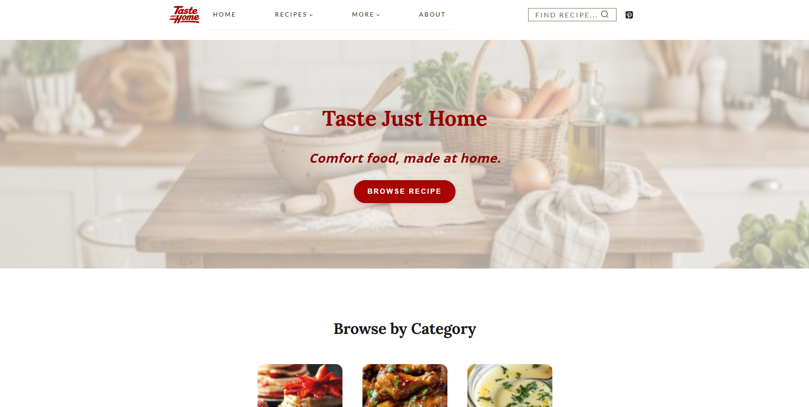
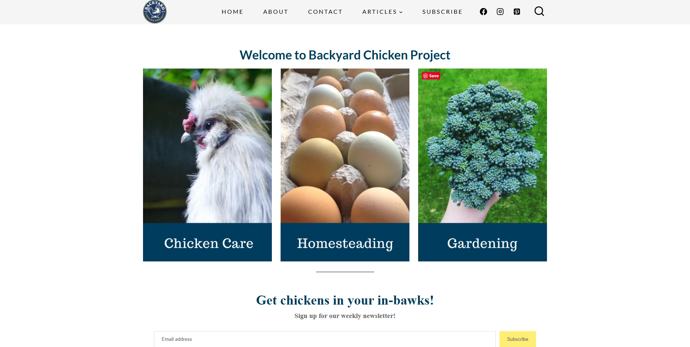
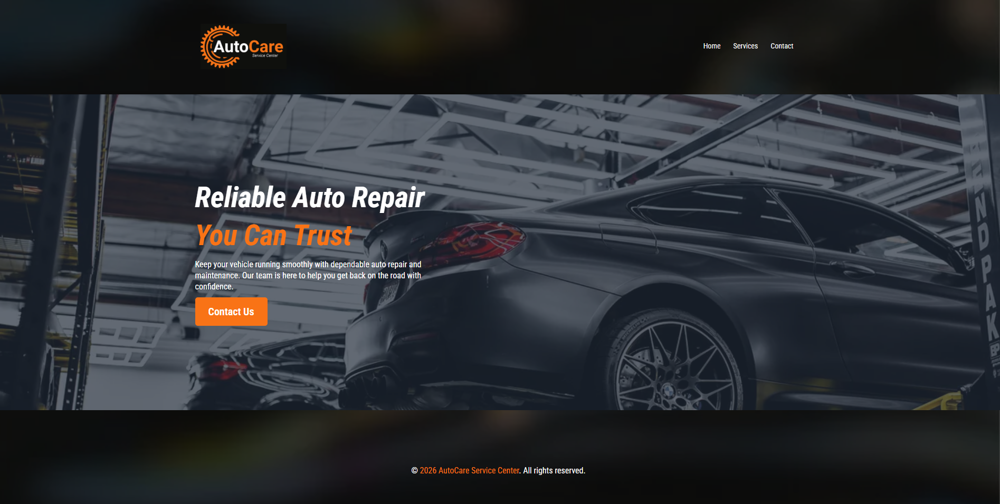
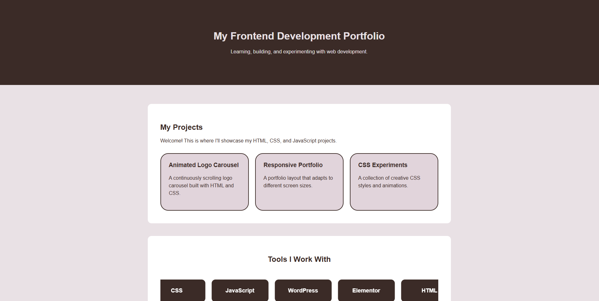

FRONTEND DEVELOPMENT PORTFOLIO
Building for the web, one project at a time.
Exploring frontend development, creating responsive websites, and turning ideas into functional web experiences.
Explore My ProjectsFeatured Projects
A collection of website projects and development experiments.

Taste Just Home
WORDPRESS SUPPORTRecipe Content Creation & WordPress Support
View Project →
Backyard Chicken Project
WordPress Content Cleanup & Website Maintenance
View Project →
AutoCare Service Center
Self-Directed Website & Automation Demo
View Project →
Frontend Experiments
HTML, CSS & JavaScript Projects
Ongoing ProjectAbout Me
I'm an aspiring frontend developer with a background in WordPress website management and content support. I'm currently building my skills in HTML, CSS, and JavaScript through hands-on projects and continuous learning.
I enjoy turning ideas into functional, responsive websites while exploring how design and code work together. My goal is to grow as a developer by creating practical projects and improving my problem-solving skills.
Learning by building, experimenting, and improving one project at a time.
Currently Learning
HTML · CSS · JavaScript
Background
WordPress Website Management
Focus
Responsive Web Design & Frontend Development